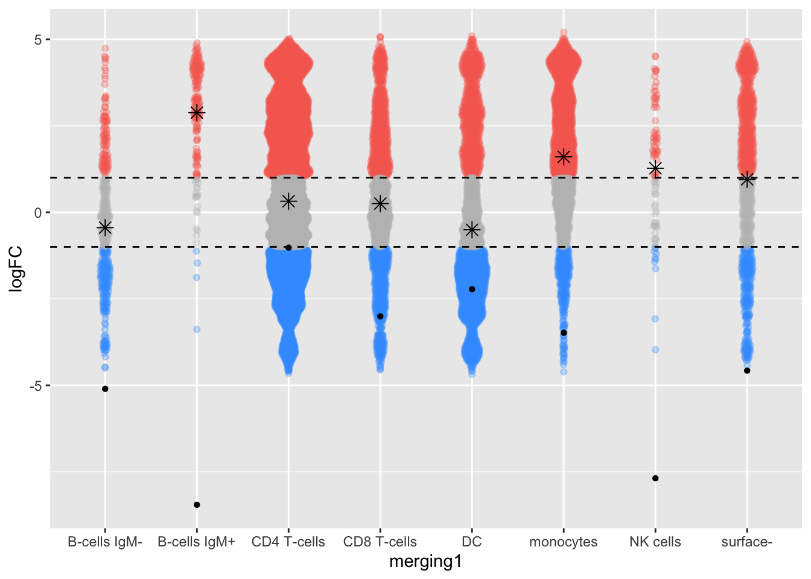
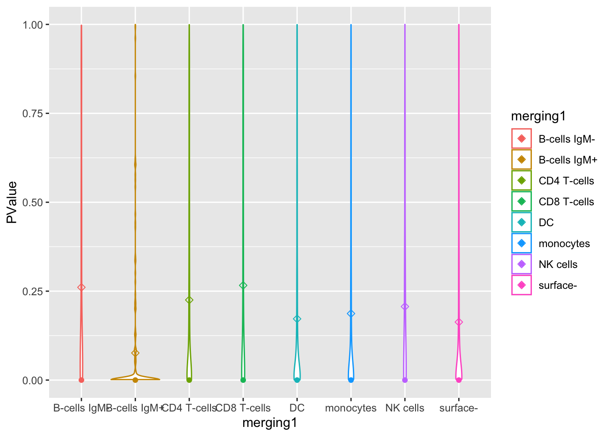
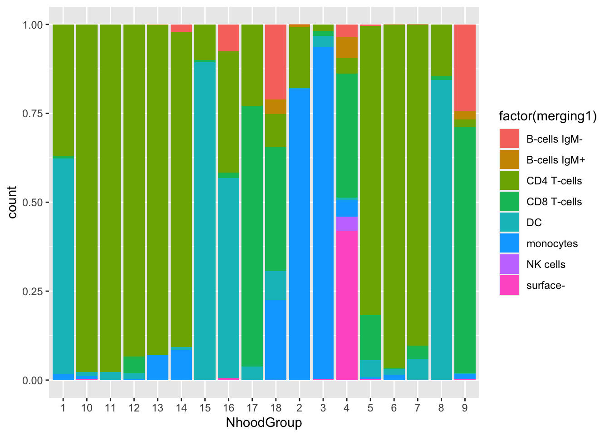

library(miloR)
library(SingleCellExperiment)
library(scater)
library(dplyr)
library(patchwork)
library(ggbeeswarm)
library(ggplot2)04_milo
Loading packages
Clustering by type
Function to run PCA
myfeature <- list("type", "state", NULL)
run.PCA <- function(feature) {
sce <- cluster(sce, features = feature,
xdim = 10, ydim = 10, maxK = 20, seed = 1234)
sce <- runDR(sce, "PCA", features = feature)
}
sce.list <- lapply(myfeature, run.PCA)o running FlowSOM clustering...o running ConsensusClusterPlus metaclustering...Warning in check_numbers(k = k, nu = nu, nv = nv, limit = min(dim(x)) - : more
singular values/vectors requested than availableWarning in (function (A, nv = 5, nu = nv, maxit = 1000, work = nv + 7, reorth =
TRUE, : You're computing too large a percentage of total singular values, use a
standard svd instead.Warning in (function (A, nv = 5, nu = nv, maxit = 1000, work = nv + 7, reorth =
TRUE, : did not converge--results might be invalid!; try increasing work or
maxito running FlowSOM clustering...
o running ConsensusClusterPlus metaclustering...Warning in check_numbers(k = k, nu = nu, nv = nv, limit = min(dim(x)) - : more
singular values/vectors requested than availableWarning in (function (A, nv = 5, nu = nv, maxit = 1000, work = nv + 7, reorth =
TRUE, : You're computing too large a percentage of total singular values, use a
standard svd instead.Warning in (function (A, nv = 5, nu = nv, maxit = 1000, work = nv + 7, reorth =
TRUE, : did not converge--results might be invalid!; try increasing work or
maxito running FlowSOM clustering...
o running ConsensusClusterPlus metaclustering...Warning in check_numbers(k = k, nu = nu, nv = nv, limit = min(dim(x)) - : more
singular values/vectors requested than availableWarning in (function (A, nv = 5, nu = nv, maxit = 1000, work = nv + 7, reorth =
TRUE, : You're computing too large a percentage of total singular values, use a
standard svd instead.Warning in (function (A, nv = 5, nu = nv, maxit = 1000, work = nv + 7, reorth =
TRUE, : did not converge--results might be invalid!; try increasing work or
maxitmerging_table1 <- "PBMC8_cluster_merging1.xlsx"
download.file(file.path(url, merging_table1),
destfile = merging_table1, mode = "wb")
merging_table1 <- read_excel(merging_table1)
head(data.frame(merging_table1)) original_cluster new_cluster
1 1 B-cells IgM+
2 2 surface-
3 3 NK cells
4 4 CD8 T-cells
5 5 B-cells IgM-
6 6 monocytesmerging_table1$new_cluster <- factor(merging_table1$new_cluster,
levels = c("B-cells IgM+", "B-cells IgM-", "CD4 T-cells",
"CD8 T-cells", "DC", "NK cells", "monocytes", "surface-"))DA analysis
Preparing required variables
merging_table1 <- "PBMC8_cluster_merging1.xlsx"
download.file(file.path(url, merging_table1),
destfile = merging_table1, mode = "wb")
merging_table1 <- read_excel(merging_table1)
head(data.frame(merging_table1)) original_cluster new_cluster
1 1 B-cells IgM+
2 2 surface-
3 3 NK cells
4 4 CD8 T-cells
5 5 B-cells IgM-
6 6 monocytesmerging_table1$new_cluster <- factor(merging_table1$new_cluster,
levels = c("B-cells IgM+", "B-cells IgM-", "CD4 T-cells",
"CD8 T-cells", "DC", "NK cells", "monocytes", "surface-"))
ei <- metadata(sce)$experiment_info
(da_formula1 <- createFormula(ei,
cols_fixed = "condition",
cols_random = "sample_id"))$formula
y ~ condition + (1 | sample_id)
<environment: 0x7fcbfbd05200>
$data
condition sample_id
1 BCRXL BCRXL1
2 Ref Ref1
3 BCRXL BCRXL2
4 Ref Ref2
5 BCRXL BCRXL3
6 Ref Ref3
7 BCRXL BCRXL4
8 Ref Ref4
9 BCRXL BCRXL5
10 Ref Ref5
11 BCRXL BCRXL6
12 Ref Ref6
13 BCRXL BCRXL7
14 Ref Ref7
15 BCRXL BCRXL8
16 Ref Ref8
$random_terms
[1] TRUE(da_formula2 <- createFormula(ei,
cols_fixed = "condition",
cols_random = c("sample_id", "patient_id")))$formula
y ~ condition + (1 | sample_id) + (1 | patient_id)
<environment: 0x7fcbfbc632a8>
$data
condition sample_id patient_id
1 BCRXL BCRXL1 Patient1
2 Ref Ref1 Patient1
3 BCRXL BCRXL2 Patient2
4 Ref Ref2 Patient2
5 BCRXL BCRXL3 Patient3
6 Ref Ref3 Patient3
7 BCRXL BCRXL4 Patient4
8 Ref Ref4 Patient4
9 BCRXL BCRXL5 Patient5
10 Ref Ref5 Patient5
11 BCRXL BCRXL6 Patient6
12 Ref Ref6 Patient6
13 BCRXL BCRXL7 Patient7
14 Ref Ref7 Patient7
15 BCRXL BCRXL8 Patient8
16 Ref Ref8 Patient8
$random_terms
[1] TRUEcontrast <- createContrast(c(0, 1))
group <- factor(ei(sce)$condition)
design <- model.matrix(~0+group)
colnames(design) <- levels(group)Run DA analysis function
sce.list <- lapply(sce.list, mergeClusters, k = "meta20",
table = merging_table1, id = "merging1", overwrite = TRUE)
run.DA <- function(sce){
da_res <- diffcyt(sce,
formula = da_formula1, contrast = contrast, design = design,
analysis_type = "DA", method_DA = "diffcyt-DA-edgeR",
clustering_to_use = "merging1", verbose = FALSE)
}
diffcyt.da_res <- lapply(sce.list, run.DA)Milo
Preparing traj_design
library(stringr)Warning: package 'stringr' was built under R version 4.1.2prepare.traj_design <- function(traj_milo){
traj_design <- data.frame(colData(traj_milo))[,c("sample_id", "condition")]
traj_design <- distinct(traj_design)
traj_design$sample_id <- colnames(nhoodCounts(traj_milo))
traj_design$condition <- str_sub(traj_design$sample_id, 1, str_length(traj_design$sample_id)-1)
rownames(traj_design) <- traj_design$sample_id
return(traj_design)
}Run milo
#plotUMAP(traj_milo) + plotNhoodGraphDA(traj_milo, da_results, alpha=0.05) +
# plot_layout(guides="collect")
# plotNhoodGroups(traj_milo, milo_res = da_results, alpha = 0.05) + plot_layout(guides="collect")
run.Milo <- function(sce, cluster_id){
traj_milo <- Milo(sce)
reducedDim(traj_milo, "PCA") <- reducedDim(sce, "PCA")
# Defining representative neighbourhoods
traj_milo <- buildGraph(traj_milo, d = 9)
traj_milo <- makeNhoods(traj_milo, d = 9)
# Counting cells in neighbourhoods
traj_milo <- countCells(traj_milo, meta.data = colData(traj_milo), sample="sample_id")
traj_milo <- calcNhoodDistance(traj_milo, d=9)
# DA testing
traj_design <- prepare.traj_design(traj_milo)
milo.da_res <- testNhoods(traj_milo, design = ~ condition, design.df = traj_design)
milo.da_res <- groupNhoods(traj_milo, da.res = milo.da_res)
# Annotate cell type to each neighbourhood
colData(traj_milo)$merging1 <- cluster_ids(sce, cluster_id)
milo.da_res <- annotateNhoods(traj_milo, da.res = milo.da_res, coldata_col = cluster_id)
}
milo.da_res <- run.Milo(sce.list[[1]], "merging1")Constructing kNN graph with k:10Checking valid objectRunning refined sampling with reduced_dimWarning in .refined_sampling(random_vertices, X_reduced_dims, k): Rownames not
set on reducedDims - setting to row indicesChecking meta.data validityCounting cells in neighbourhoodsas(<dgTMatrix>, "dgCMatrix") is deprecated since Matrix 1.5-0; do as(., "CsparseMatrix") insteadUsing TMM normalisationPerforming spatial FDR correction withk-distance weightingFound 7418 DA neighbourhoods at FDR 10%Warning in asMethod(object): sparse->dense coercion: allocating vector of size
1.9 GiBComparison by logFC
plot.logFC <- function(milo.da_res, diffcyt.da_res){
milo.da_res$color <- "grey"
milo.da_res[milo.da_res$logFC > 1, ]$color <- "#F76D5E"
milo.da_res[milo.da_res$logFC < -1, ]$color <- "#3FA0FF"
diffcyt.da_res$merging1 <- diffcyt.da_res$cluster_id
ggplot(milo.da_res, aes(x=merging1, y = logFC, color=milo.da_res$color)) + geom_quasirandom(alpha=.3,varwidth=TRUE) + stat_summary(fun.y=mean, geom="point", shape=8, size=3, color="black") + geom_point(data=data.frame(diffcyt.da_res), mapping = aes(x=merging1, y=logFC), pch=16, color="black") + scale_colour_identity() + geom_hline(yintercept=1,linetype=2) +geom_hline(yintercept= -1,linetype=2)
}
#+ geom_point(data=data.frame(diffcyt.da_res), mapping = aes(x=merging1, y=logFC))
p <- plot.logFC(milo.da_res, rowData(diffcyt.da_res[[1]]$res))Warning: The `fun.y` argument of `stat_summary()` is deprecated as of ggplot2 3.3.0.
ℹ Please use the `fun` argument instead.p
Comparison by P-value
plot.PValue <- function(milo.da_res, diffcyt.da_res){
diffcyt.da_res$merging1 <- diffcyt.da_res$cluster_id
diffcyt.da_res$PValue <- diffcyt.da_res$p_val
p<-ggplot(milo.da_res, aes(x=merging1, y=PValue, color=merging1)) +
geom_violin(trim=FALSE) + ylim(c(0,1)) + stat_summary(fun.y=mean, geom="point", shape=23, size=2) + geom_point(data=data.frame(diffcyt.da_res), mapping = aes(x=merging1, y=PValue))
}
p <- plot.PValue(milo.da_res, rowData(diffcyt.da_res[[1]]$res))
pWarning: Removed 882 rows containing missing values (`geom_violin()`).
ggplot(milo.da_res, aes(x=NhoodGroup,fill = factor(merging1))) + geom_bar(position = "fill")
#cell_counts_per_sample <- assay(da_res2$res, "counts")
#plotExprHeatmap(sce, k="merging1", by="cluster_id")
#plotAbundances(sce, k = "merging1", by = "cluster_id", shape_by = "sample_id")
#cd <- data.frame(colData(sce), t(assay(sce,"exprs")), k = cluster_ids(sce, "merging1"))
#avg_exprs_sample_cell <- by(cd, list(cd$sample_id, cd$k), \(df) {
# fd <- df[, colnames(df) %in% rownames(sce)]
# pbs <- colMeans(as.matrix(fd))
# data.frame(sample_id = df$sample_id[1], cluster_id = df$k[1], pbs)
#})